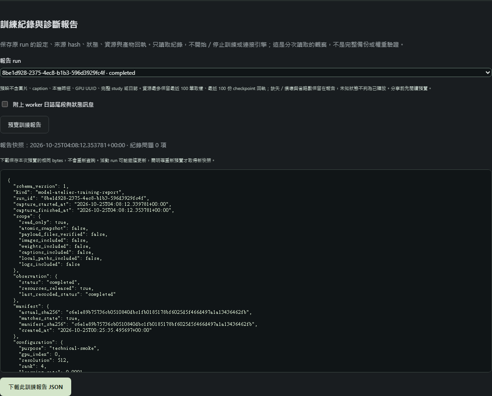

用文字生成圖片
選 checkpoint、填提示詞，建立一張作品。不需要訓練資料集。
前往第一次生成 →LOCAL CREATIVE WORKSPACE / USER GUIDE
跟著畫面與步驟，學會啟動平台、使用參考圖，以及審查資料、訓練和比較 LoRA。先完成一條路線，再逐步加入其他功能。
01 / CHOOSE A PATH
選 checkpoint、填提示詞，建立一張作品。不需要訓練資料集。
前往第一次生成 →每次用一張圖片作為推論條件，觀察風格或外觀的影響。
前往參考圖流程 →先分割與逐張審查，再明確建立訓練。畫風與角色分開進行。
前往資料審查 →上傳圖片或標上「畫風參考」，不會訓練模型。R02 每次只使用一張參考圖；T05 匯出只複製通過審查的 train 圖片；T06 還需按「開始此 run 的訓練」，才會啟動訓練。
創作啟動→模型庫→創作工作台→作品庫
訓練分割與審查→匯出資料包→準備 run→明確開始→安裝與比較
02 / START
以下假設依賴、ComfyUI 與模型已安裝。如果是第一次 clone，先完成 安裝與操作文件；啟動捷徑不會替你安裝環境。
start-all.bat它開啟平台與 ComfyUI 的服務視窗，平台就緒後自動開啟 http://127.0.0.1:8000/。使用期間保留服務視窗。
原生預設為
http://127.0.0.1:8188。平台是操作介面，引擎才實際生成圖片；平台開得了，不代表引擎已連線。
查看 GPU、環境及磁碟可用空間。目錄列右側的資料夾 icon 可要求檔案總管開啟受管理的本機目錄；不存在的目錄不可開啟。容量表示整個磁碟區，不是資料夾大小。
按「同步模型清單」，確認 checkpoint 檔名、架構與版本。同步只讀取引擎清單，不下載權重；清單空白時先安裝模型。SDXL 表單需選已登記為 SDXL 的相容模型。

確認完成：平台可開啟、引擎連線、清單中有正確登記的模型。
可只執行
.\start-local.ps1 開啟平台。引擎離線仍能整理已保存資料。訓練前須等待其他
GPU 任務完成，停止受管理的 ComfyUI；不要為了訓練再用 start-all 同時啟動引擎。Docker
是選用部署，並非日常必要條件，且不提供此 Windows 訓練操作。
03 / FIRST IMAGE

選擇已核對的 checkpoint。先不加 LoRA 或其他參考條件，建立方便比較的基準。
用明確的主體、動作、場景描述；模型若有專用提示格式，依它的文件設定。seed 固定為同一個十進位整數，方便比較。尺寸、steps、CFG 與 sampler 依模型及硬體設定，不套用訓練參數。
1girl, long brown hair, green eyes, reading a book, quiet library, soft
lighting這只描述內容；不會自動指定作者畫風，也不保證角色身分一致。
保存草稿不會生成。按下生成後追蹤原任務的進度、狀態與錯誤；回應遺失時使用原請求恢復操作，不連按生成建立重複任務。
明確匯入／補齊生成圖片，確認能預覽、下載原圖及 workflow。補上名稱、筆記與收藏，方便後續比較。
確認完成：作品庫能看到輸出與原設定，並且可下載原圖。
04 / IMAGE REFERENCE
支援 PNG／JPEG／WebP，單張不超過 20 MiB、1,600 萬像素。填用途與備註以便整理；用途標籤本身不會影響生成。
使用 SDXL checkpoint；在「同步與登記參考元件」確認 IP-Adapter Plus SDXL ViT-H 與 CLIP Vision ViT-H 的架構、版本及來源。缺檔案／節點時先依 R02 安裝與登記步驟完成，不能只靠更改檔名。
「畫風參考」觀察線條、上色等影響；「角色外觀參考」觀察外觀特徵。權重 0.6 是介面起始值，不是品質最佳值；起訖須在 0–1 且起點小於終點。先固定 prompt／seed，只改一個條件。
可用同流程權重 0 作為對照，分別觀察服裝、髮色、背景是否也被帶入。提高權重不一定更準確；角色模式沒有身分鎖定保證。
22 個檔案去重後是 20 個不同內容。R02 實際挑 1 張畫風圖與 1 張角色圖，分別作單張參考；沒有把 20 張一起訓練。T02 的兩條清單各為 10 張 train 候選、6 張開發評估、6 張排除，候選還需審查。這些數字按用途計，不表示已有 20 張訓練資料。
確認完成：你能分辨「參考造成的內容變化」與「想要的畫風／角色特徵」，且保留對照結果。
05 / REVIEW THE DATA
此階段只用 CPU 整理資料。畫風與角色應建立不同清單，避免把「同一作者」誤當「同一角色」。原圖留在外部資料夾，不要直接修改已登記的檔案。
| 輸入 | 這台電腦的既有位置／用途 |
|---|---|
| 原圖來源目錄 | C:\Users\Ryanisop\Desktop\artist_ref\ハシスタジオ_pixiv |
| 資料清單 JSON | runtime/t02-dataset-study-20261023/style-v1.json；角色清單為同目錄的
character-v1.json。 |
| 原 R02 study JSON | runtime/r02-reference-study/study-manifest.json。有 parent_study
的清單需提供原檔，請勿重新格式化或改換行。 |
填完整原圖目錄、選清單 JSON；需要時選原 R02 study，按「匯入待審查清單」。原圖 hash、大小、尺寸有差異時先處理來源問題，不要為了通過而修改校驗值。
先依圖片 ID、檔名／原作群組搜尋，或篩選用途與缺項。按「定位圖片」跨頁移到審查欄位；缺項仍以已保存修訂為準，未保存輸入不會自動消除缺項。caption 寫實際看見的主體、服裝、動作與背景。將畫風觀察放在獨立欄位，它不會自動附加到 trainer caption。核對後才把標註狀態改為「已審查」，填實際審查人。
填來源用途依據與審查人，不確定就保留待核對。角色資料逐張確認為目標角色，並填同一個 subject ID；不要只因棕髮綠眼就全部標為 target。同原作裁切與差分保持同組，避免跨訓練與評估。
輸入版本名稱並保存。檢查與匯出使用已保存版本；未保存的表單不會混進去。依缺項逐一修正，保留舊修訂供追溯。
只匯出 train 圖片與 caption；validation／test／excluded 不進 trainer 目錄。匯出結果須為 completed，才可切到訓練執行選取資料包。這一步仍未開始訓練。

train 是訓練候選；validation 是開發時反覆比較；test 是未曝光最終評估。final test 必須在第一次匯入前獨立分割，不能把已看過、參考或調參的圖改稱盲測。介面不預覽 final test，既有保留／排除圖不可轉成訓練圖。
準備作者試訓時：先核對既有 10 張候選的內容、來源用途及角色身分；若服裝、視角、姿勢與背景涵蓋不足，再補對應圖片。新試訓可從每組 20–50 張訓練圖、另留 5–10 張評估圖考慮，這只是起始配額，不是工具門檻或品質保證。
最終品質驗證前：另準備未參與訓練、選參考圖、調參或聯絡表檢視的不同原作評估圖。目前 6 張開發圖不能改稱未曝光最終測試。缺資料時保持待驗收，不靠複製圖片湊數。
確認完成：資料出口檢查通過，匯出狀態 completed，並且知道哪些圖不會進 trainer。
06 / TRAIN & RESUME
網頁不安裝 trainer。先在專案根目錄用平台 venv 執行下列唯讀檢查；需要安裝才依
T03 完整指引明確加
--install。基底固定為 Animagine XL 4.0 Opt，並非任意 checkpoint。
.\.venv\Scripts\python.exe -m scripts.training_environment確認固定 trainer、離線 tokenizer、依賴與基底均符合，再選 T05 已封存資料包。Docker／非 Windows 平台不提供此操作。
準備會凍結來源、設定與 hash，不開始訓練。先核對資料包和用途；不要把技術測試的 6 步當成作者訓練配方。
記下請求 UUID 與 run UUID。回應不明時查回原訓練請求，避免重建。若需改參數，建立新請求，不改已凍結 run。
等待其他生成完成；在你管理的 ComfyUI 服務視窗按 Ctrl+C，停止受管理的 8188 引擎與本專案容器平台，保留原生平台。再按「開始此 run 的訓練」。平台不會替你關閉其他程式。
離開頁面不會停止 worker。要停時按「要求停止」，等步驟邊界完成且資源釋放，才切回生成。停止要求送出不等於已停止。
先按「準備另一個請求」，選未達總步數的完整 checkpoint，再按「以新 UUID 準備續訓」。新 run 仍是 prepared，需再次明確開始；總步數與原設定沿用，不會額外加一份總步數。
| 欄位 | 意義與起步方式 |
|---|---|
| 尺寸 512／1024 | 訓練解析度。512 有本機 RTX 3060 技術紀錄；1024 與多圖長時間容量需另測，不能套用相同記憶體結論。 |
| LoRA rank 4／8／16 | 可訓練模組的容量設定；不是越高越好，也會影響資源。先固定一個值作比較。 |
| 總更新步數／保存間隔 | 總更新目標與完整保存點頻率。間隔太大可能在停止時沒有可續訓的 checkpoint。 |
| Learning rate／seed | 控制更新幅度及訓練隨機性。記錄兩者，不以頻繁改 seed 代替檢查資料。 |
| NVIDIA 裝置 index | trainer 所用的裝置編號；單卡通常為 0，多卡需核對實際環境。 |

確認完成：run 已完成或已停止，程序與租約均釋放，且保留日誌與完整保存點。
在「訓練紀錄與診斷報告」選原 run，按「預覽訓練報告」，檢查後再下載 JSON。紀錄暫不可讀的 run 也可選取；損壞／缺失欄位保留未知，不需要重新開始訓練。
預設排除原圖、caption、本機路徑、GPU UUID 與日誌；仍含資料集識別及 run UUID。需要追查錯誤才勾選附上日誌，重新預覽並檢查其中的路徑／文字後再自行分享。下載與本次預覽 bytes 相同，活動 run 不會自動刷新這份快照。報告只讀紀錄，不代替完整備份、權重校驗或品質驗收。

07 / INSTALL & COMPARE
沿用 T04 核對來源與完整 hash，安裝到受管理的 loras 目錄。安裝成功只證明產物一致性，不等於品質通過。
所有訓練釋放資源後，執行 .\start-comfyui.ps1。確認平台引擎為
http://127.0.0.1:8188，再同步登記；技術用途或條款未審查標記不會自動消失。
保存六份方案與人工模板。方案不會自動出圖，十二件比較輸出仍需在工作台的比較／實驗區依方案明確執行。詳細條件見 T04 產物與評估流程。
比較基底與 LoRA 的線條、色彩、構圖泛化；角色另外檢查臉部、髮飾與不同服裝／姿勢。記錄失敗與內容污染，不只挑最好看的一張。開發圖用來調整，最終保留圖等設定凍結後再評估。
確認完成：有成對結果、相同條件與人工紀錄，能說明哪些改善、哪些仍失敗。
08 / KEEP YOUR WORK

data/，包含
SQLite、素材、作品、固定任務輸入與訓練資料包。runtime/training/runs/、runtime/training/evaluations/、訓練環境版本及所需模型／LoRA。它們不會全部包含在
DATA 備份內。09 / WHEN YOU GET STUCK
先手動開
http://127.0.0.1:8000/。若無法連線，查看平台服務視窗的第一個錯誤，檢查
.venv、已建置前端及 8000 是否被占用；不要一直重開多份服務。依
安裝與操作檢查依賴，若調整原始前端，須重新
build 才反映到原生平台。
確認 8188 引擎有啟動且網址正確，先同步模型清單。權重須實際安裝，模型架構／專用元件也要登記；同步與登記不是下載，也不保證任意模型相容。
這是正常的。準備只凍結資料與設定；開啟新 run、確認 prepared 後，需另外明確開始。若引擎在線，先等待其他工作完成並停止你管理的引擎，再開始。
先保存新版本，再重新檢查。逐項確認非空白內容 caption、已審查狀態／審查人、來源用途紀錄／依據／審查人，角色路徑另需 target 與正確角色 ID。還需至少一張 train 與一張開發評估，以及合法分組；不要把未知資料填成已核對。
保留原 UUID，使用「查回原匯入資料集」「查回原匯出結果」「查回原訓練請求」或原 run 狀態，不直接重送。interrupted／start_unknown／exporting 不能當成功；保留檔案與日誌，依 中斷恢復規則核對。比較方案中斷也可能已保存部分方案。
保存原 run 與日誌，先等程序及租約釋放。核對其他 GPU 程式、尺寸與 rank；若要調整，建立新設定與新 run，不改凍結檔。1024／多圖長時間工作負載需另驗，不用 512 技術成功推定容量。
先確認選對流程、模型、參考元件／LoRA 與固定對照，再檢查標註、同角色身分、原作分組與題材涵蓋。缺哪種視角／服裝／場景就補哪種，而非只增加相似差分。現有作者圖尚待資料審查，技術驗收不代表作者品質通過。